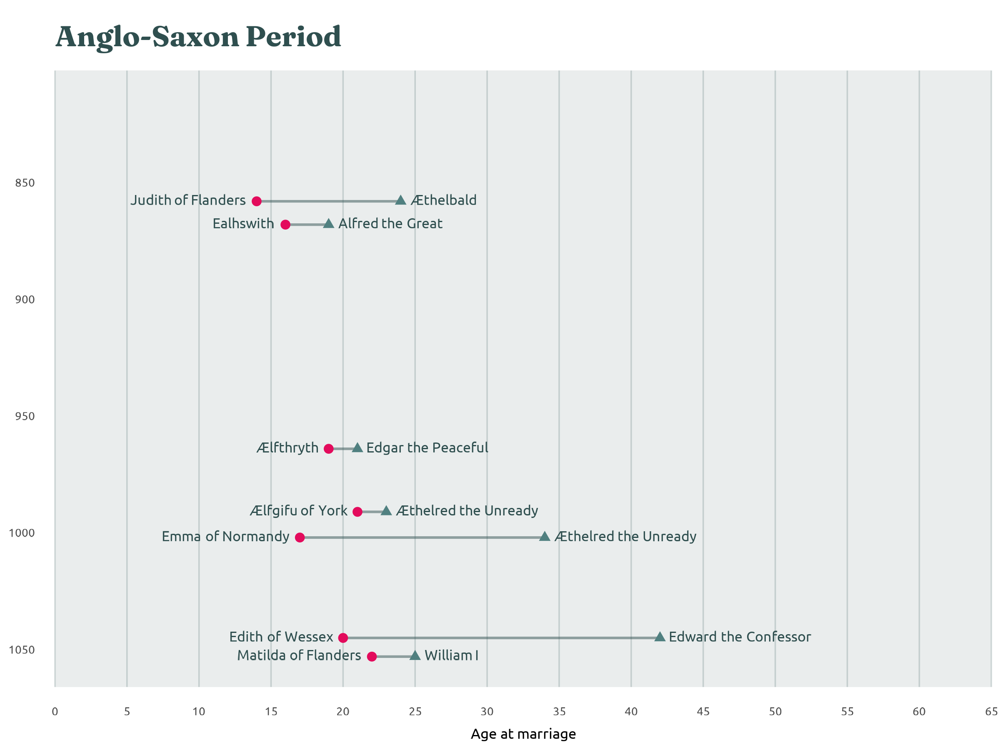
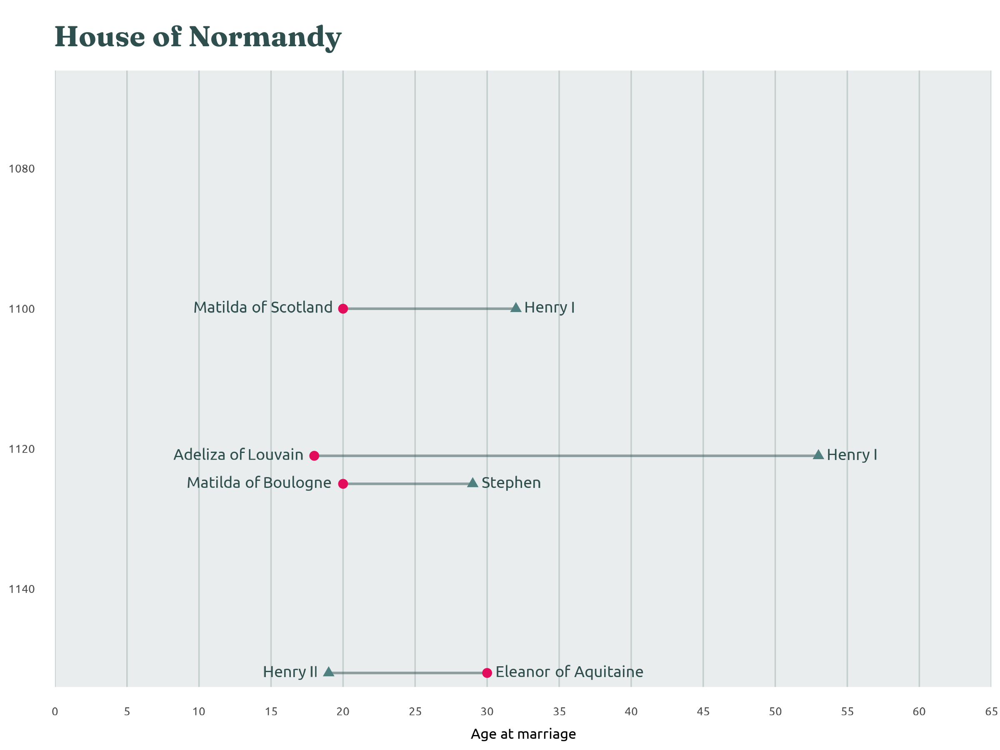
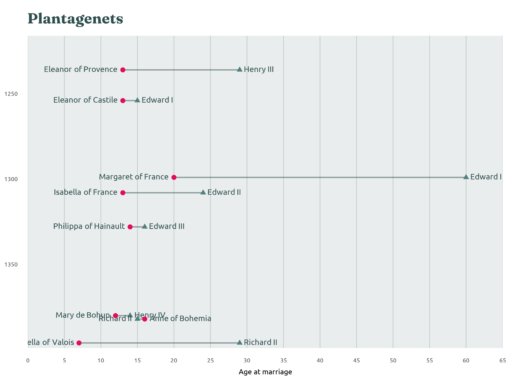
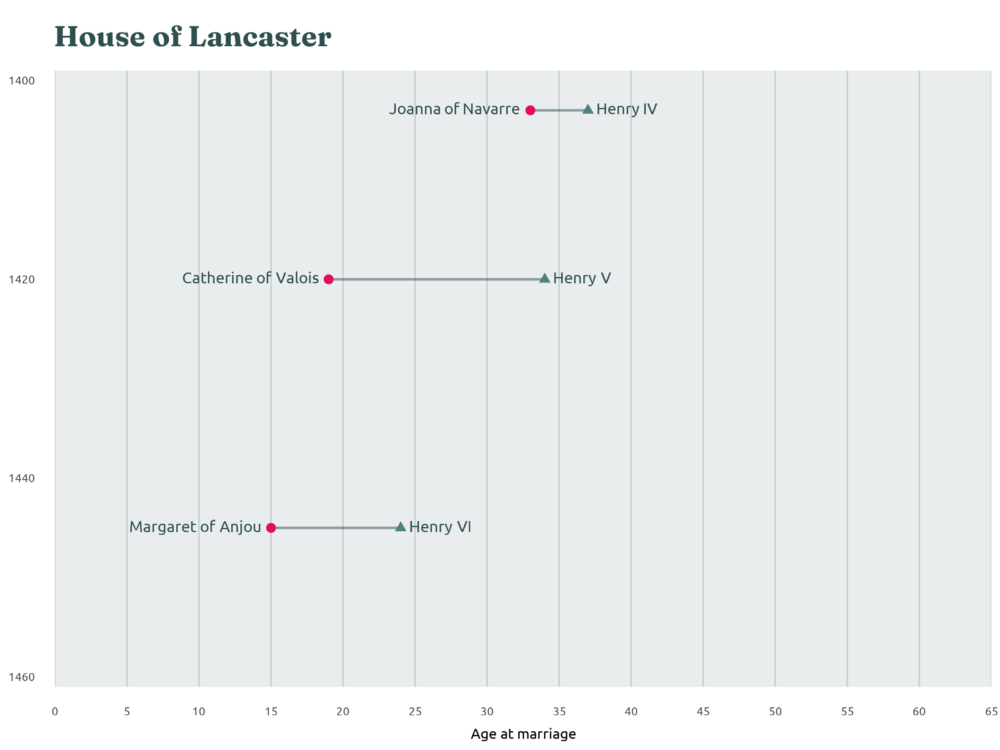
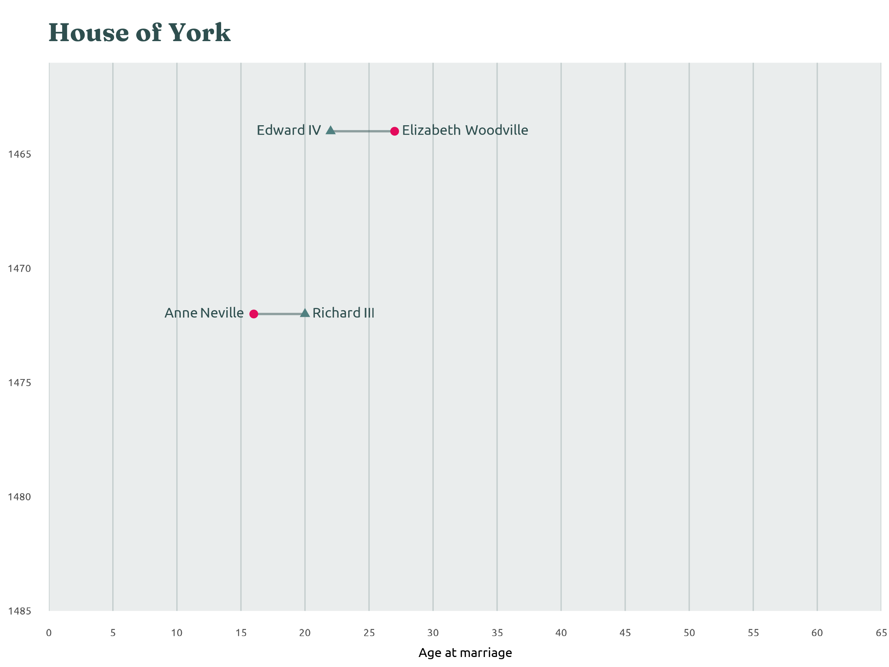
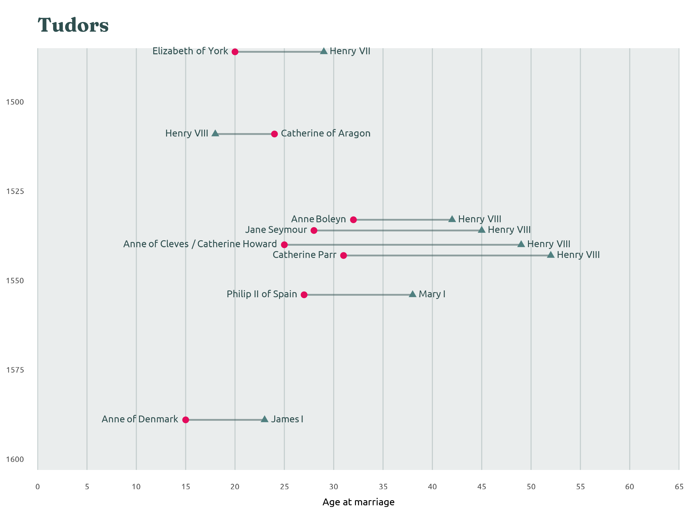
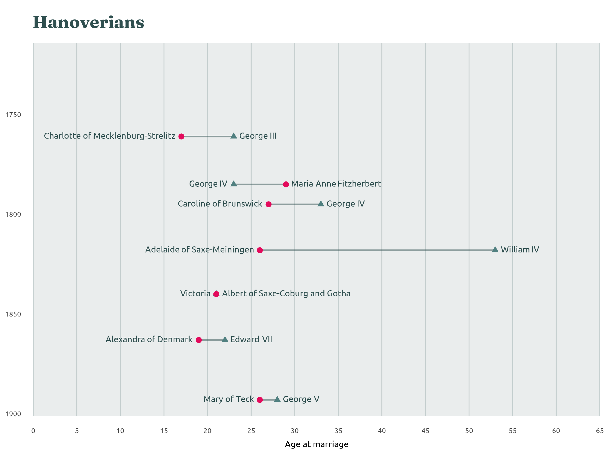
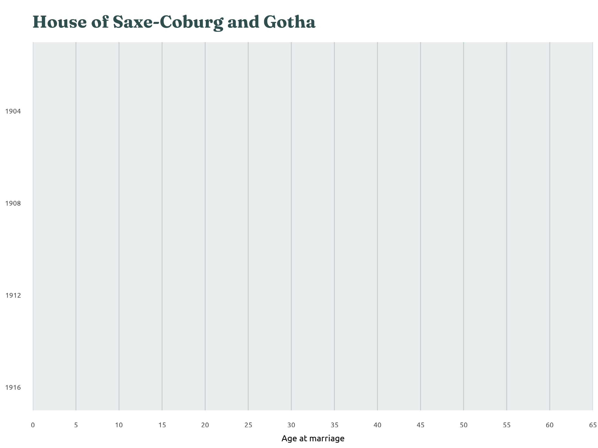
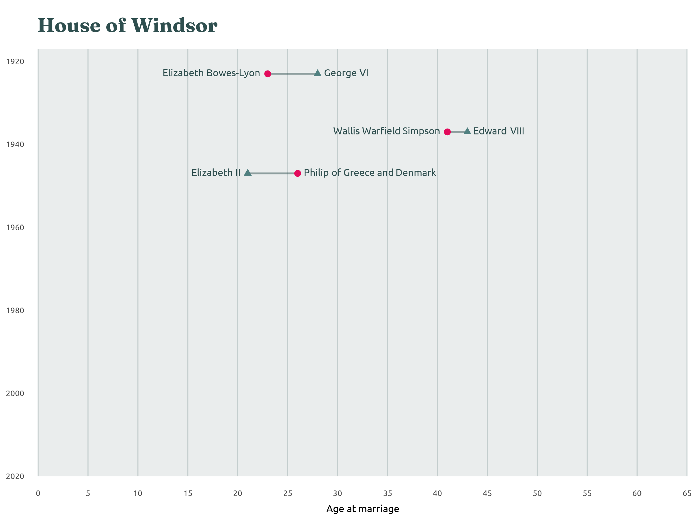

English Monarchs and Marriages
English Monarchs and Marriages
By Nicola Rennie
Data from ianvisits.co.uk lists the ages of monarchs and their consorts at the time of marriage. Monarchs (who have historically mostly been male) are typically older than their consorts and ‘it was not that uncommon for older monarchs to be married off to quite young women if needing a replacement queen after the previous model had been inconvenient enough to drop dead’.
*Only marriages where the monarch’s age, the consort’s age, and the year of marriage are known are included here. A further 27 marriages are included in the full data where the dates or ages are unknown or uncertain.
Anglo-Saxon Period
802 - 1066
The Anglo-Saxon period was marked by the migration and settlement of Germanic tribes, such as the Angles, Saxons, and Jutes, in England after the Roman withdrawal.
House of Normandy
1066 - 1154
The House of Normandy began with William the Conqueror’s victory at the Battle of Hastings, establishing Norman control over England - a period marked by significant changes in English society.
Angevins
1154 - 1216
The Angevins were a powerful dynasty that began with Henry II, who expanded English territories through marriage and conquest, forming the vast Angevin Empire.
Plantagenets
1216 - 1399
The Plantagenets were a powerful English dynasty known for their involvement in major historical events.
House of Lancaster
1399 - 1461
The House of Lancaster was a branch of the Plantagenet dynasty that gained and lost the English throne during the Wars of the Roses, with its most prominent king, Henry V, achieving military victories in the Hundred Years’ War before the dynasty was ultimately defeated by the House of York.
House of York
1461 - 1485
The House of York ruling during the latter part of the Wars of the Roses, saw the reigns of Edward IV and Richard III, ultimately losing the throne to the Tudors at the Battle of Bosworth, marking the end of the Plantagenet line.
Tudors
1485 - 1603
The House of Tudor oversaw the unification of England and Wales, with iconic monarchs like Henry VIII and Elizabeth I shaping the nation’s cultural and political landscape.
Stuart Period
1603 - 1714
The Stuart dynasty reigned in England and Scotland from 1603 to 1714, and the period was marked by significant events such as the execution of Charles I.
Hanoverians
1714 - 1901
The Hanoverian period was characterised by the establishment of a constitutional monarchy, the expansion of the British Empire, and significant industrial, political, and social changes, with notable monarchs like George III and Queen Victoria.
House of Saxe-Coburg and Gotha
1901 - 1917
The House of Saxe-Coburg and Gotha was a German dynasty that saw the reign of King Edward VII and his successors, but was renamed the House of Windsor during World War I due to anti-German sentiment.
House of Windsor
1917 - Present
The House of Windsor, established in 1917 by King George V, has been the reigning British royal family through major 20th and 21st-century events, including two World Wars.











